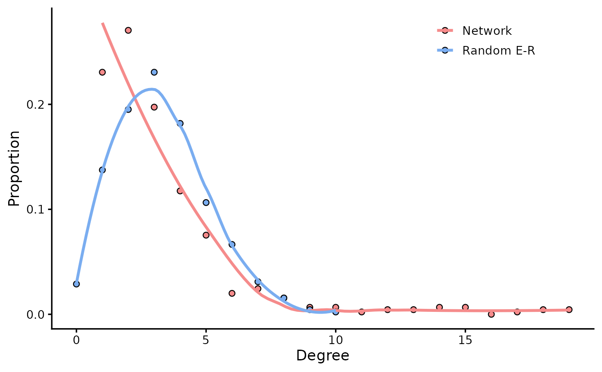

Degree distribution comparison with random network
rand_net(go = go, plot = TRUE)ggplot
Other topological:
extract_sample_net(),
fit_power(),
get_group_skeleton(),
links_stat(),
nc(),
net_par(),
rand_net_par(),
smallworldness()
rand_net(co_net)

#> IGRAPH f4b1d99 U--- 451 740 -- Erdos-Renyi (gnm) graph
#> + attr: name (g/c), type (g/c), loops (g/l), m (g/n)
#> + edges from f4b1d99:
#> [1] 2-- 12 8-- 18 1-- 26 11-- 27 18-- 30 1-- 32 33-- 36 11-- 40 23-- 45
#> [10] 13-- 47 46-- 50 21-- 55 4-- 56 27-- 57 36-- 57 41-- 58 33-- 59 17-- 61
#> [19] 39-- 61 37-- 63 58-- 70 31-- 73 35-- 75 9-- 79 25-- 80 54-- 80 45-- 82
#> [28] 55-- 83 70-- 84 17-- 85 11-- 86 61-- 89 1-- 90 79-- 90 22-- 93 60-- 93
#> [37] 38-- 95 41-- 96 42-- 96 65-- 97 66-- 99 79--101 29--102 31--102 33--103
#> [46] 67--103 42--104 46--104 78--104 62--105 30--106 4--108 73--109 13--113
#> [55] 90--113 50--115 20--122 88--122 56--123 79--123 70--127 11--128 65--129
#> [64] 98--131 18--134 55--134 84--138 76--141
#> + ... omitted several edges